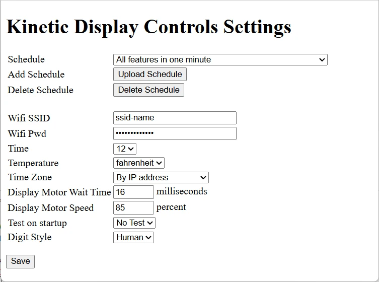
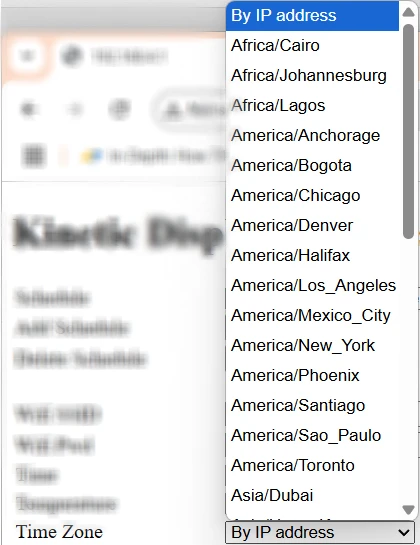
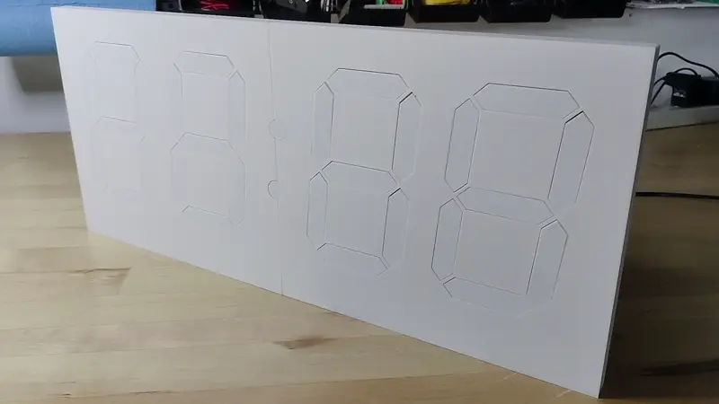
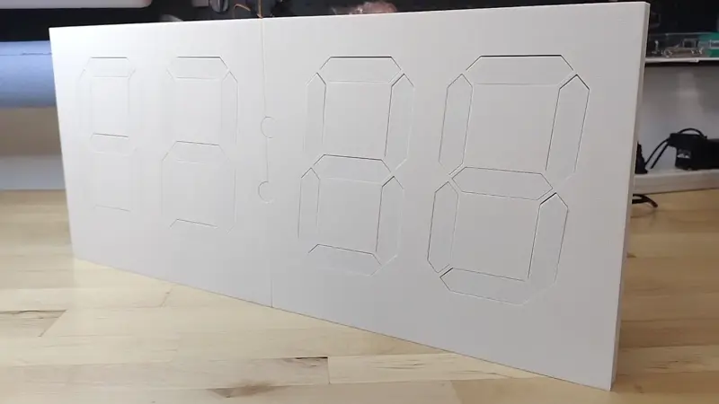
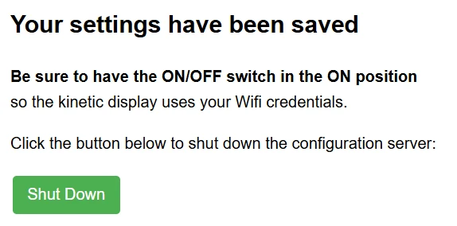
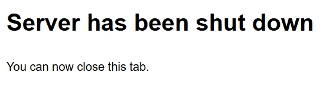

User Guide - Web Service and Settings¶
The Kinetic Display features a built-in web service that allows you to easily configure and personalize your display using any device with Wi-Fi and a web browser. Having adjustable settings for your kinetic display offers several advantages:
- Personalization: Tailor the display's schedule, time format, temperature units, and digit style to match your preferences and environment.
- Convenience: Make changes from your phone or computer without needing to reprogram or physically access the device.
- Adaptability: Quickly update Wi-Fi credentials, time zones, or schedules if you move the display or your needs change.
- Reliability: Built-in test and recovery options help ensure the display operates correctly after power loss or network changes.
- Energy Efficiency: Schedule sleep and wake times to save power and extend the life of your display.
This guide will walk you through connecting to the display's Wi-Fi access point, accessing the web-based settings page, and understanding each available setting.
1. Start the Kinetic Display's Wifi Access Point¶
- Unplug the display's 12V power supply.
- Set the switch on the back of the display to the Off position.
- Plug in the display's 12V power supply.
2. Connect Your Device to the kinetic-display Wifi Access Point (AP)¶
Note
Complete the previous step to start the Kinetic Display's Wifi Access Point before proceeding.
Connect from a Mobile Device¶
- Open a QR code reader app on your mobile device.
-
Scan the QR code labeled "SSID" on the back of the display, or scan the image below:
-
Tap "kinetic-display" in the list of Wifi access points.

Connect from a Computer¶
- Open your computer's Wifi settings.
- Select "kinetic-display" from the list of Wifi access points.
- Enter the password: 12oclock
- Click Connect.
3. Access the Web Service Settings Page¶
Note
You must be connected to the Kinetic Display's Wifi Access Point before continuing.
Access from a Mobile Device¶
- Open a QR code reader app on your phone.
-
Scan the QR code labeled "URL" on the back of the display, or scan the image below:
-
Open the URL: http://192.168.4.1

Access from a Computer¶
- Open a web browser.
- Type
192.168.4.1into the address bar and press Enter or Return.
4. Settings Overview¶
The screenshot below shows the Kinetic Display Control Settings page when opened for the first time.

Key Settings¶
- Schedule
- Dropdown selection: Choose from 5 prebuilt schedules, or add your own, see the user guide on Schedule Creation and Management.

- Add Schedule and Delete Schedule to customize the list of schedules, see the user guide on Schedule Creation and Management for details.
- Wifi SSID and Wifi PWD
- Enter your home Wifi network name (SSID) and password (PWD).
- The default values are
SSIDandPassword. Change these to your actual Wifi credentials.
- Time
- Select 12 or 24 hour time display (default: 12 hour).
- TempCF
- Choose to display temperature in Celsius or Fahrenheit (default: Fahrenheit).
- TimeZone
- Select your time zone. By default, By IP Address is selected, which uses your external IP to determine local time. Selecting a named time zone will use that for time retrieval.
- 
- Display Motor Wait Time
- Set a value between 15 and 30 milliseconds (default: 16 ms). This controls how long the motor is on when a segment moves.
- Display Motor Speed
- Set a value between 50 and 99 percent (default: 85%). Higher values make segments move faster.
- Test on Startup
- Choose Test or No Test.
- Test: Each digit and colon will extend and retract all segments on startup, then begin scheduled actions. Useful for ensuring all segments are working. 
- No Test: The display resumes from its last known state after power loss.
- The state of the Kinetic Display is preserved even when the power is inadvertently turned off, such as a power outage. When the power is turned back after a power outage, the display will resume from its last known state when the setting is No Test. For example, the display is running normally and the power outage began at 10:30 and ended at 11:15, then all the digits except digit 3 would change on startup. If the setting is set to Test, then the display will run its animated segment test and clear all digits from 3 to 0 on the display before resuming.
- Digit Style or Type
- Choose Human or Alien. See the Digit Type Table for details. 
5. Save and Apply Settings¶
- Click the Save button.
-
When prompted, click the Shut Down button. This will turn off the kinetic-display Wifi and web service, and switch the display to use your home Wifi credentials.

-
Set the switch on the back of the display to the On position.
-
Close the browser window when you see the following screen:

Note
It can take up to a minute for the display to begin showing scheduled actions after saving settings.